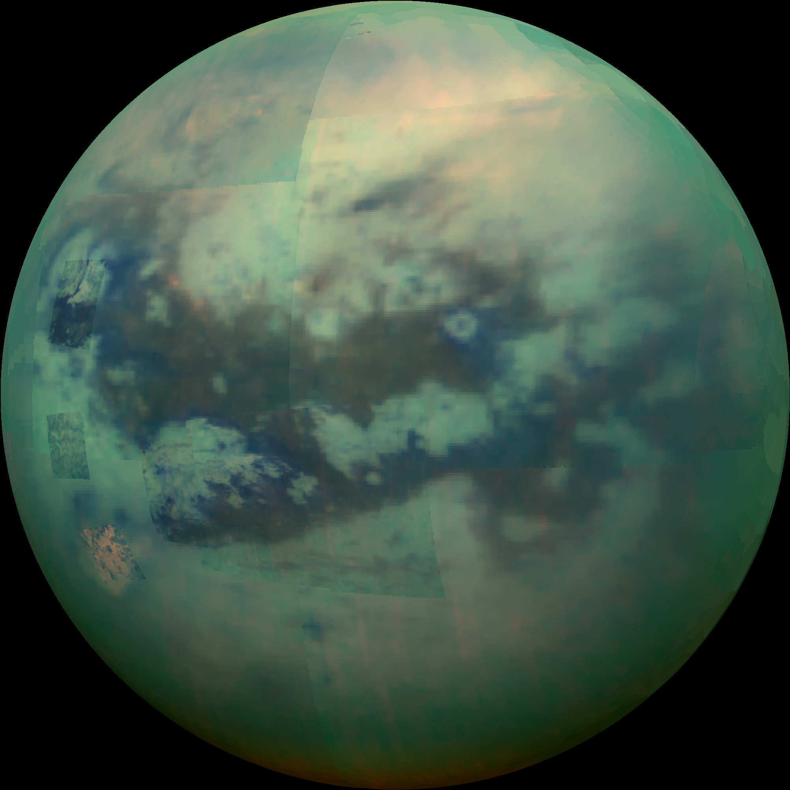
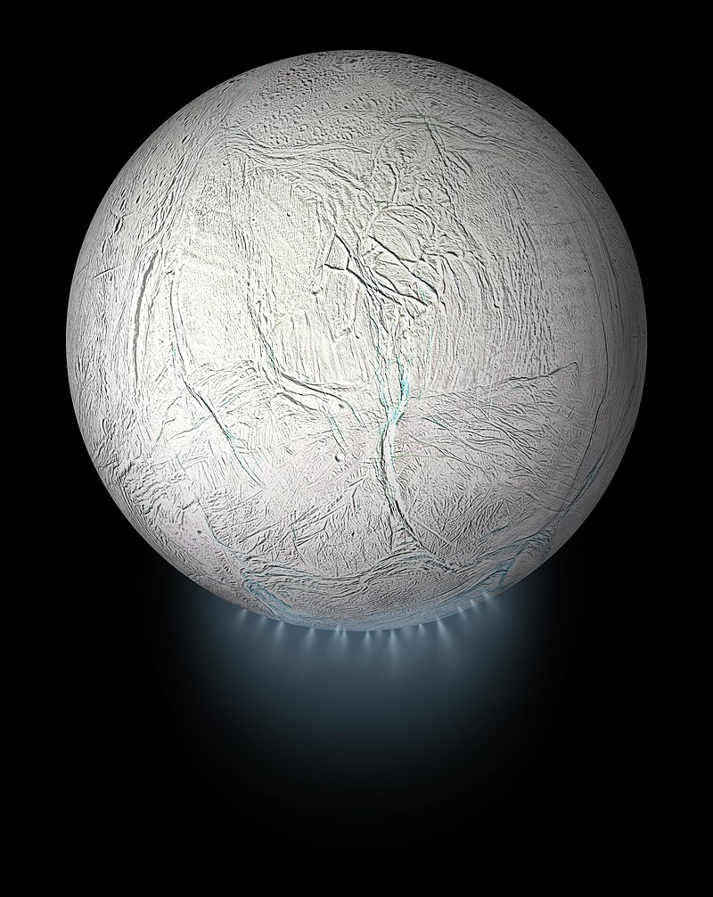

Точният брой спътници на Сатурн вероятно никога няма да бъде определен поради факта, че много от телата, изграждащи пръстените на Сатурн, вероятно са достатъчно големи, за да бъдат класифицирани като малки спътници. До средата на 20 век са известни 9 спътника. През 1980 г. апаратите Вояджър откриват 9 нови спътника на близка орбита около планетата. През 2000 г. 12 нови спътника са били открити, всички на големи разстояния от планетата и на високоексцентрични и ретроградни орбити – най-вероятно тела, прихванати от гравитацията на Сатурн.
Енцелад е естествен спътник на Сатурн открит през 1789 г. от английския астроном Уилям Хершел. Изследван е от апарата Касини-Хюйгенс през 2004 г. и 2005 г. Там е възможно да има живот.
Титан е най-големият спътник на Сатурн и втори по големина в Слънчевата система след Юпитеровия Ганимед. Планетата Меркурий е по-малка от Титан.Титан е открит на 25 март 1655 г. от холандеца Кристиян Хюйгенс. Наречен е на титаните – великани от гръцката митология. Към края на 2007 г. данните от над 30 облитания на Титан, показва, че северният полюс е осеян с гигантски езера и морета. Около 60% от северния полюс на Титан (над 60º) е картографиран от радара на Касини. 15% от картографираната повърхност представлява около 400 езера. 70% са големи, надвишаващи 26 000 km2. Най-голямото е 100 000 km2 (малко по-малко от площта на България), а най-малкото е 1 km2.
Титан
Енцелад